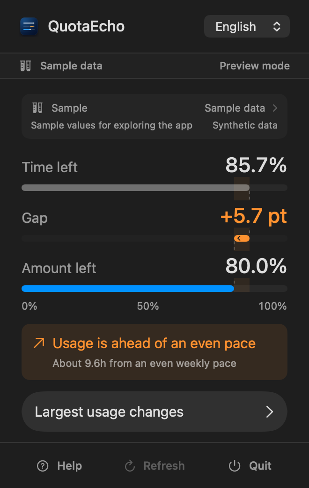
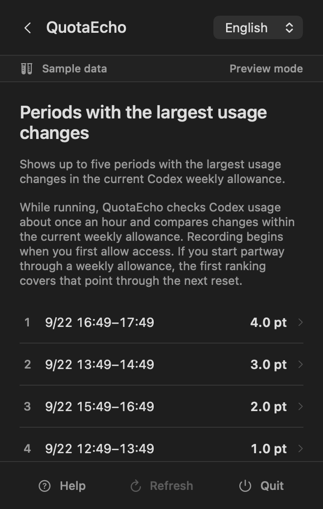
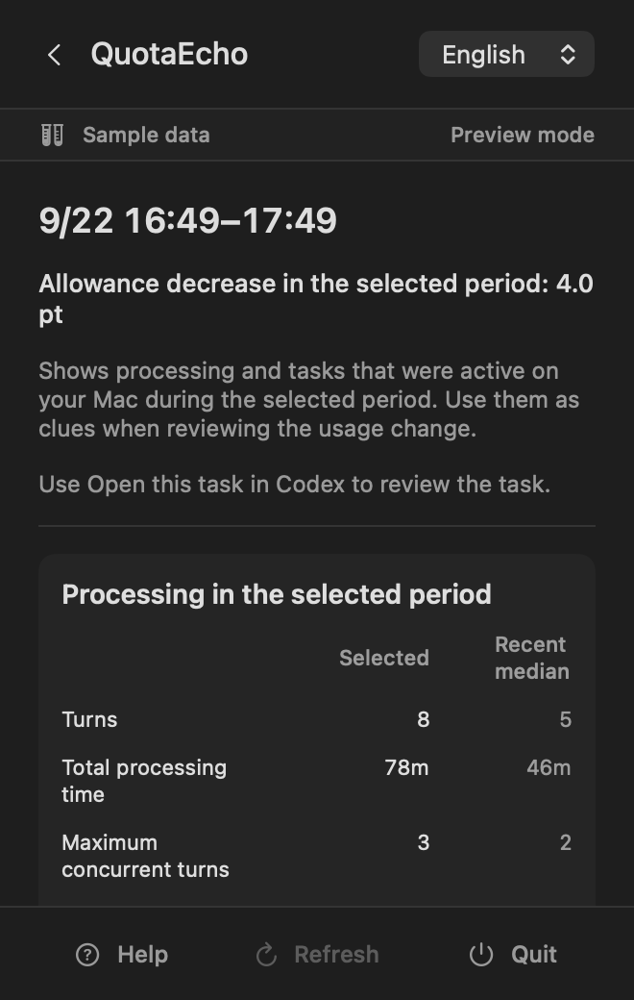
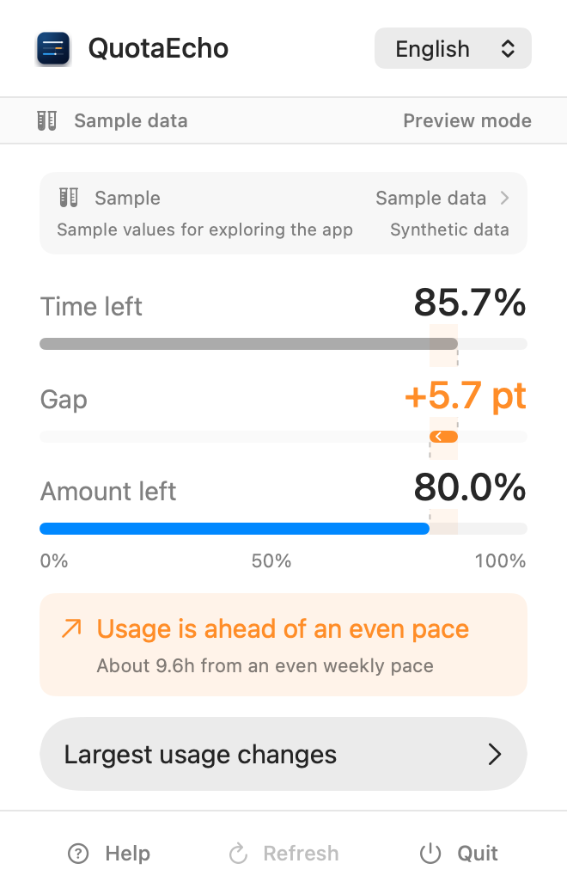

The current pace is hard to read
You can see the allowance left, but it is still difficult to tell whether usage is ahead of time or whether you have headroom before reset.
Local-first Codex usage companion
Your allowance dropped faster than expected. You want to remember what was running. Or you still have room to use and do not want it to go unnoticed. QuotaEcho brings the observations for those decisions into one continuous view.

QuotaEcho closes the gap between knowing how much remains and deciding what to do next.
You can see the allowance left, but it is still difficult to tell whether usage is ahead of time or whether you have headroom before reset.
When allowance changes more than expected, finding which tasks and processing were active during that period takes time.
If the weekly allowance still has room, you want that information to help you decide whether to begin something new before reset.
QuotaEcho places observed time, processing, and tasks together as clues for your own judgment.
Your current pace, periods with the largest changes, and the processing observed during those periods—connected in one flow.
QuotaEcho places time until the next reset and the remaining Codex weekly allowance on a shared 0–100% scale. Gap shows whether usage is ahead of an evenly spread pace or whether headroom remains.
Within the current Codex weekly window, QuotaEcho compares continuous periods of about one hour observed while the app is running and shows up to five with the largest allowance decreases.

For a selected period, QuotaEcho summarizes counts, time, and overlapping activity from local records on your Mac. Related Codex tasks can be opened directly for review.

QuotaEcho shows facts observed in local records on the Mac you are using. It does not determine exact per-task consumption or establish why allowance changed.
When QuotaEcho launches, the current Gap appears in the menu bar and the details panel opens once automatically. After that, click the menu bar item to open or close Time left, Gap, Amount left, and the review views at any time.
QuotaEcho follows the macOS appearance setting automatically, keeping the same information clear in both bright and dark workspaces.

QuotaEcho adds no OpenAI sign-in. It reads only the needed information from the local Codex records you permit and processes it on your Mac.
You do not enter an OpenAI ID, password, or API key into QuotaEcho.
QuotaEcho reads permitted local Codex records. It does not change Codex tasks or records.
Weekly allowance, task names, processing times, and needed counts are processed in the app.
Information read by the app is not transmitted to 株式会社Universion Closure Logic.
Last updated: September 22, 2026
This policy describes how 株式会社Universion Closure Logic (“we,” “us,” or “the Company”) handles information in the macOS app QuotaEcho.
After you grant read-only access in macOS, QuotaEcho reads metadata from Codex records stored on your Mac, including the weekly allowance, task names, processing times, and processing counts. This information is processed on your Mac and is not transmitted to us by the app.
QuotaEcho does not obtain your OpenAI account ID, password, API key, cookies, authentication tokens, or auth.json. It does not extract, store, display, or transmit prompts, response bodies, reasoning, code, file paths, commands, or command output.
QuotaEcho stores the current weekly allowance history, language preference, read-only permission information, and a randomly generated local identifier inside the app sandbox. Task names and processing summaries are used only while displayed and are not retained in the weekly history.
The weekly history is replaced when a new weekly allowance begins. You can remove QuotaEcho’s saved history, settings, and read permission through the uninstall instructions in the app. This does not delete or modify Codex tasks or records.
If you contact support by email, we receive your email address and message content and use them to respond and resolve the issue. Support communications may be processed by our email service provider.
The code for this website does not use advertising or behavioral-tracking cookies or analytics tools. Our hosting provider may temporarily process server logs such as IP address, browser information, and access time for security and reliable operation.
QuotaEcho is provided independently from OpenAI. It does not imply affiliation, sponsorship, endorsement, provision, or warranty by OpenAI. OpenAI’s own service information and terms govern actual availability, allowance, and account conditions.
We may update this policy when the app, law, or method of delivery changes. Material changes will be described on this page.
株式会社Universion Closure Logic
support.quotaecho@universion-closure-logic.com
QuotaEcho is planned, developed, and provided by 株式会社Universion Closure Logic. As an independent product, it is designed to turn observable information into context for the user’s own decisions.
If usage does not appear or the app asks about read access, use Codex once and then try Refresh in QuotaEcho.
If the issue remains, contact QuotaEcho Support.
support.quotaecho@universion-closure-logic.comInformation that helps us review the issue
Do not send passwords, API keys, auth.json, Codex data folders or session files, prompts, or response contents.